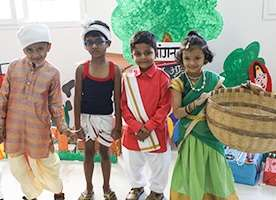

Ever since the blossoming of our first ORCHIDS in Hyderabad in 2002, to a chain of 35+ International Schools, we have impacted more than 30,000 lives, setting a new benchmark for quality of education. ORCHIDS The International School is one of the top International Schools, blooming all over Bengaluru, Mumbai, Hyderabad, Pune, Kolkata, Chennai. We believe in “Shaping minds, Touching lives, Building Second Homes”. Along with academic excellence, we also lay a strong emphasis on personality development and employ a number of innovative ways to inculcate strong values, building responsible individuals and future-ready global citizens.
Art stimulates imagination. To watch a child completely engrossed in arts is to recognize that the brain is active and driven by aesthetics and emotions, to make meaning, state opinions and represent what matters to them. Our ART curriculum emphasizes on the development of a child’s fine motor skills i.e. the development of a child’s body and mind coordination, that takes place at a particular age when a child is going through the EYP phase. This particular phase plays a very important role in a child’s life since this is where he/she develops the ability to reach out to his/her creative potentials, which is then reflected in the higher grades.
Education in visual arts is fundamental to the aesthetic, physical, emotional, intellectual, and social growth of the individual. It provides children with unique ways of knowing, doing, living, and belonging to a global community. When children reach Grade III, their creativity and imagination that they develop, require channeling, so as to have a constructive outcome. Hence we have initiated the concept of ‘Kits’ in different subjects.
Our music course aligns very closely with the Trinity College London Theory of Music curriculum. It focuses on the basic rudiments in western music theory and journeys over detailed elements in rhythm, harmony, pitch, progression, composition, orchestration, and more.
Children should be involved in at least one art form as it contributes to their happiness. And when combined with learning, it must never be ignored. At ORCHIDS, we believe dance is an integral aspect of a balanced education programme. It is a unique way of enhancing creativity, confidence, and expression in a student. We have introduced an entire curriculum on kinesthetic learning to make sure our students get the best chance at improving their body and mind coordination, bringing a balance to their lives.
ORCHIDS Dance Curriculum(ODC) introduces Physical, Mental and Social Attributes on a wider scale. It teaches them flexibility, strength, endurance, balance coordination, etc. both physically and in terms of a life skill.
‘YOUNG ORCHIDS THESPIANS’ is a uniquely designed curriculum for theatre followed at every branch of ORCHIDS International School. This curriculum is based on David Kolb’s ‘Experiential Learning Theory’, Lev Vygotsky’s ‘Social Constructivist and Collaborative Learning Theories” and Jerome Bruner’s ‘Scaffolding Learning Model’.
Mission: To explore and train the bodies, voices, and minds of young artists so that they can communicate and express their ideas and feelings with confidence in different styles and forms. To learn, understand, and respect the diverse views and attitudes of people belonging to other cultures, communities, nationalities, faiths, and religions. To contribute to building compassion for the world communities and environment.
Swimming has been on a rise with a huge number of Indians performing at National and International tournaments all across the nation. It is an all-around activity that includes muscular development, cardiovascular development, body and mind coordination, making a student endurable and fit.